UX/UI дизайн
Графика в веб‑дизайне
Графика в веб-дизайне ― все, что не является текстом, UI-элементами и фотографиями.
Зачем нужна графика
Одной из важнейших функций графики является коммуникативная ― графические элементы позволяют наглядно представить и донести ключевую информацию до посетителей сайта. Например, на сайте Heydays, где графика используется для визуального объяснения основных направлений деятельности компании.
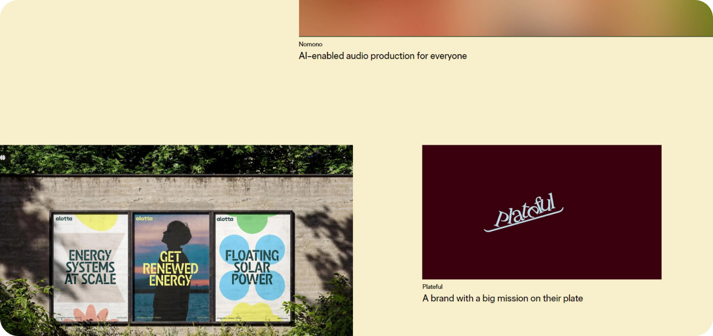
Скриншот сайтаЕкатерина Кейплак
На главной странице сайта крупные анимированные иллюстрации наглядно показывают возможности студии в создании интерактивных продуктов, разработке брендинга, проектировании пользовательского опыта и реализации творческих, экспериментальных идей. Таким образом, графика выступает эффективным средством коммуникации, позволяя быстро и доступно передать ключевые сообщения о компании и её услугах.
Ещё одна функция графики ― это повышение конверсии сайта. Использование разных графических элементов стимулирует посетителей задерживаться на сайте, создавая более приятный опыт использования.
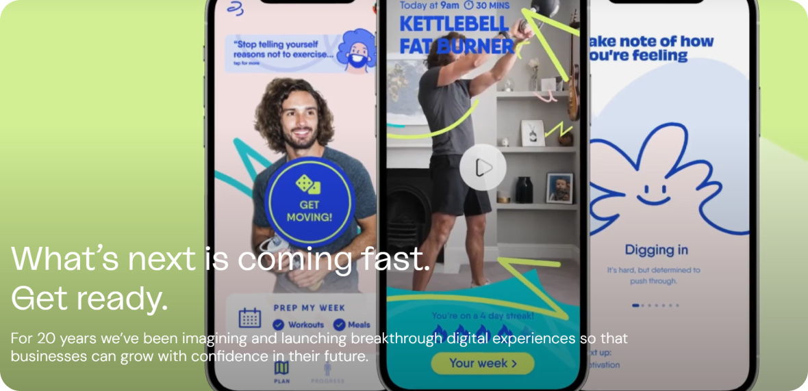
Скриншот сайта цифрового агентстваUstwo
Крупные иллюстрации и захватывающие видео на главной странице сразу привлекают внимание пользователей, побуждая их к дальнейшему изучению контента. Яркие, запоминающиеся визуальные элементы эффективно демонстрируют спектр креативных возможностей студии.
Графические элементы могут разнообразить твой дизайн, сделать его менее скучным и визуально приятным.
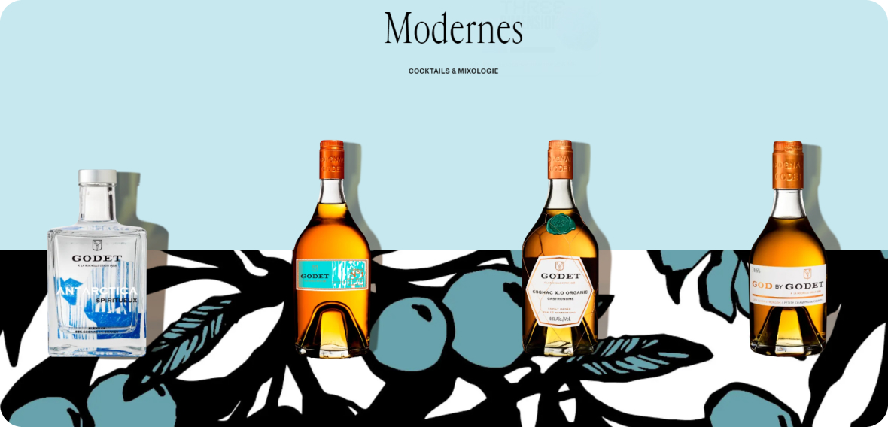
Скриншот сайта коньячного домаGodet
По мере scrolling страницы появляются анимированные графические элементы, такие как плавно двигающиеся бутылки или перекатывающиеся бочки. Эти динамичные визуальные эффекты оживляют дизайн, делают его более интерактивным и захватывающим для пользователя.
Советы по работе с графикой
Соответствие бренду
Графические элементы должны гармонично соответствовать фирменному стилю, цветовой гамме и общей концепции бренда. Это создает целостное визуальное восприятие.
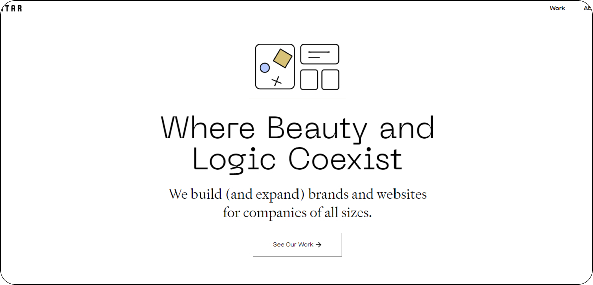
Скриншот сайта дизайнерского агентства аGrain & Mortar
Минималистичные, геометрические иллюстрации, выполненные в приглушенной цветовой гамме, являются ключевыми графическими элементами на сайте. Эти иллюстрации используются в качестве фоновых изображений, разделителей контента и акцентных элементов. Они создают ощущение гармоничной, структурированной визуальной среды, отражая подход агентства к дизайну.
Функциональность
Графика должна облегчать навигацию, привлекать внимание к важной информации и помогать пользователям совершать целевые действия. Иконки, стрелки, кнопки ― все это должно быть интуитивно понятно.
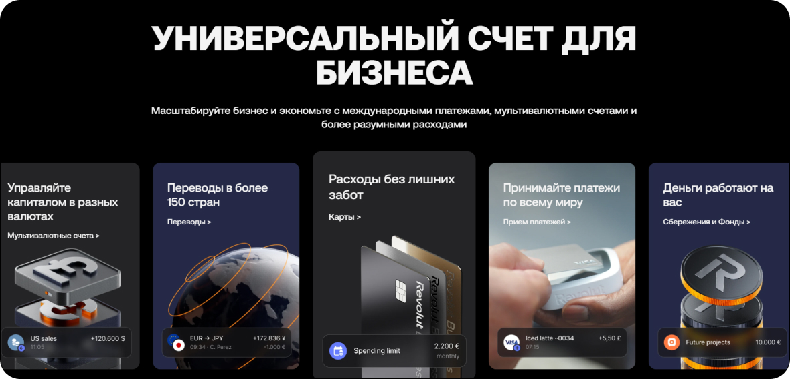
Скриншот сайта онлайн-банкаRevolut
Грамотно расставленные иконки помогают пользователям быстро ориентироваться в структуре сайта и интуитивно находить необходимые функции. Например, иконки переводов, управления счетами и других банковских операций визуально отображают назначение каждого раздела, облегчая навигацию.
Баланс
Не перегружай страницы графикой, сохраняйте чистоту и воздушность дизайна. Разумное использование визуальных элементов сделает сайт более привлекательным.
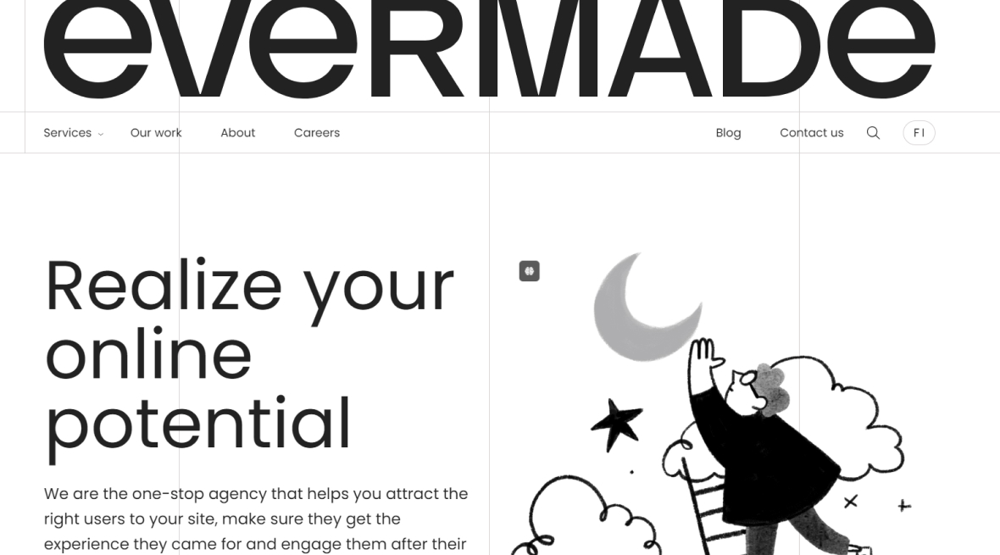
Скриншот сайта брендинговой студииEvermade
Грамотное распределение графических объектов, чередование насыщенных и "пустых" участков формирует ощущение воздушности и легкости на странице. Это визуальное равновесие придает сайту Evermade современный, элегантный вид.
Мультимедиа
Используй не только изображения, но и видео, анимации, интерактивные элементы. Они делают контент более динамичным и запоминающимся.
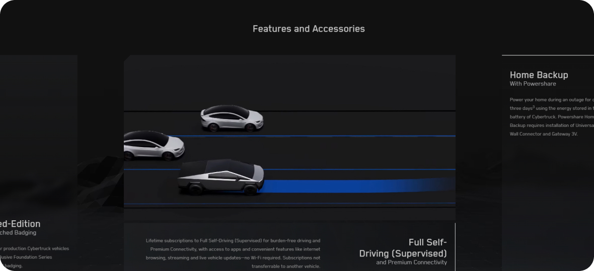
Скриншот сайтаTesla
На сайте производителя электромобилей Tesla динамичные видеоролики наглядно демонстрируют технические характеристики и возможности автомобилей, делая впечатление более запоминающимся.
Где использовать графику
В качестве декора фотографий
Дополнение фотографий или изображений различными графическими элементами является эффективным способом создания уравновешенных, привлекательных визуальных композиций на веб-страницах.
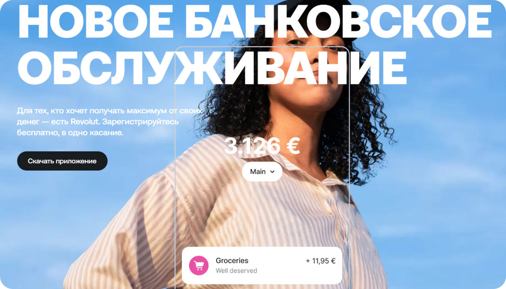
Скриншот сайта онлайн-банкаRevolut
Графика в тексте
Графика акцентирует внимание на значимых словах.
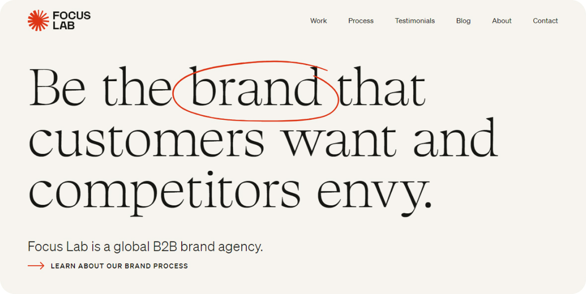
Скриншот сайта студииFocus Lab
Текст, созданный при помощи графических объектов
Экспериментальный сенсорный хаб Mesh использует креативные буквы с геометрическими узорами на домашней странице. В этом случае текст становится графическим элементом.
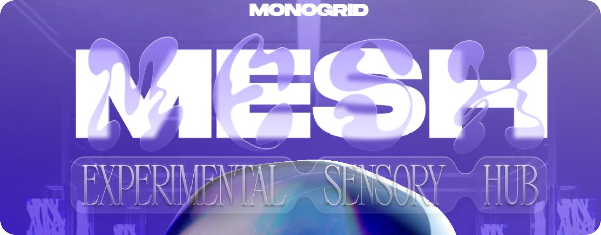
Скриншот сайтаMesh
Графика на фоне
Использование графики на фоне может улучшать визуальное оформление, привлекать внимание, передавать контекст и повышать юзабилити, но важно соблюдать баланс, чтобы не перегружать страницу и не отвлекать от основного содержания.
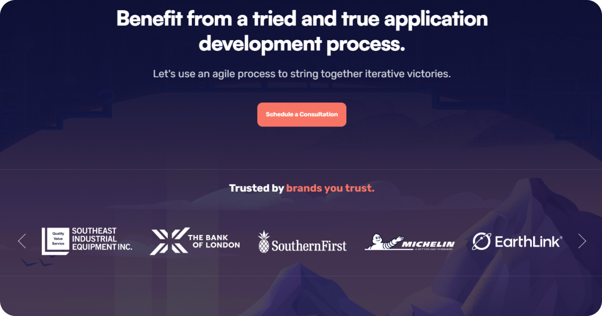
Скриншот сайта студии разработке сайтовDesignli
Примеры заданий для практики
Графика для приложения
Разработай графические элементы для мобильного приложения, включая кнопки, фоны, иконки и другое. Убедись, что все элементы прекрасно сочетаются друг с другом и соответствуют целевой аудитории.
Генерация идей для графики
Составь коллаж из графических материалов, которые вдохновляют тебя (это могут быть элементы веб-дизайна, рисунки, фотографии и т.д.). Используй этот коллаж как основу для своей следующей дизайн-концепции.
Анимация графики
Создай простую анимацию графических элементов с помощью инструментов, таких как Adobe Animate, Figma или After Effects. Это может быть анимация кнопки, появления иконки или загрузки.